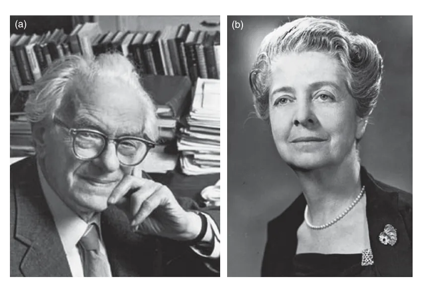
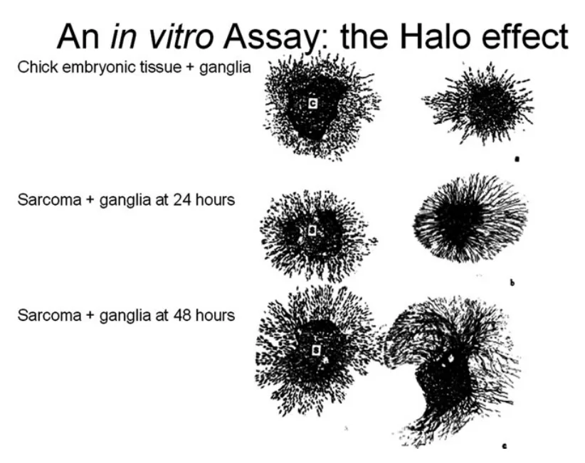

Chương 3 — Phân tử tín hiệu: Yếu tố tăng trưởng đầu tiên
Chương 3
Các phân tử truyền tín hiệu: Yếu tố tăng trưởng đầu tiên
Giống như mọi cơ quan khác trong cơ thể, hệ thần kinh bắt nguồn từ một tế bào trứng thụ tinh duy nhất. Các nhà mô học cổ điển đã hình dung quá trình này thông qua các tế bào của phôi đang biến đổi. Tổng hợp lớn đầu tiên là ý tưởng về một ‘‘nhân tố tổ chức’’ (organizer) chỉ đạo sự hình thành các cơ quan. Điểm mấu chốt đối với hệ thần kinh là các kết nối giữa các tế bào được thiết lập như thế nào, điều ngụ ý sự hiện diện của các tín hiệu gian bào. Bằng chứng rõ ràng nhất cho một tín hiệu như vậy, gọi là ‘‘yếu tố tăng trưởng thần kinh’’ (nerve growth factor), được báo cáo vào năm 1951. Các thí nghiệm tiếp theo đã xác định cấu trúc phân tử của nó, về sau được biết đến với tên NGF, đại diện đầu tiên trong số ngày càng nhiều các yếu tố hướng thần kinh (neurotropic) và dinh dưỡng thần kinh (neurotrophic) tham gia vào sự phát triển thần kinh cũng như tính mềm dẻo của các kết nối vốn làm nền tảng cho học tập, trí nhớ và đáp ứng với tổn thương. Sự sắp xếp trật tự của các kết nối được giả thuyết là đòi hỏi ái lực hóa học (chemoaffinity) giữa các sợi trục và tế bào đích của chúng. Những quá trình động này đòi hỏi sự vận chuyển các phân tử thích hợp trong sợi trục, thông qua một quá trình gọi là vận chuyển sợi trục. Do đó, thập niên 1950 có thể được xem là giai đoạn đặt nền móng cho cơ sở phân tử của sự phát triển.
Chóp sinh trưởng sợi trục
Những hiểu biết ban đầu về cách tế bào thần kinh phát triển đến từ Wilhelm His tại Basel vào thập niên 1880 (tóm tắt trong Shepherd, 1991). Ông là người sáng lập ngành phôi thai học thần kinh, tập hợp các quan sát của mình trong một bộ sách đồ sộ (His, 1880–85). Ở đây, chúng ta lưu ý đến các quan sát của ông liên quan đến sự mọc dài của sợi trục và các sợi nhánh.
Sử dụng kính hiển vi quan sát mô nhuộm ở bào thai động vật thuộc các lứa tuổi khác nhau, ông đã theo dõi trình tự các sự kiện khi các nhánh neuron xuất hiện. Một neuron vận động đang phát triển trong tủy sống trước tiên phóng ra một sợi trục dài duy nhất hướng về rễ bụng, tiếp theo là sự xuất hiện của nhiều nhánh ngắn (His, 1886). Quan sát này chứa đựng hai quy luật đã đứng vững trước thử thách của thời gian: các tế bào thần kinh phát triển sợi trục chỉ tạo ra một sợi trục duy nhất và sợi trục phát triển trước các nhánh ngắn. Các nhánh ngắn này trước đó từng được gọi là ‘‘những phần kéo dài nguyên sinh chất’’—theo nghĩa đen là các phần vươn ra từ thân tế bào. His đã đưa ra thuật ngữ ‘‘sợi nhánh’’ (dendrite) để gọi chúng, và thuật ngữ này lập tức được chấp nhận.
Sợi trục đang mọc dài được Ramo´n y Cajal (1892) ở Madrid khảo sát kỹ hơn trong các tế bào não; ông xác định đầu mút sợi trục là một thực thể riêng biệt và gọi nó là ‘‘chóp sinh trưởng sợi trục’’ (axonal growth cone). Ông hình dung nó như một loại máy phá thành, mở đường xuyên qua các tế bào và sợi chen giữa để tạo nên các tiếp xúc đặc hiệu với tế bào đích.
His và Ramo´n y Cajal đại diện cho cái được gọi là ‘‘truyền thống mô học’’ trong nghiên cứu phát triển, tức là suy luận cơ chế từ việc quan sát các cấu trúc tế bào đã được cố định và nhuộm màu. Vào thời đó, đây là chiến lược khả dĩ duy nhất vì thiếu vắng các phương pháp sinh lý học.
‘‘Cách tiếp cận mô học thực nghiệm’’ bắt đầu với Ross Harrison (1870–1959) (Purves và Lichtman, 1985). Ông theo học tại Johns Hopkins và Berlin, là một trong những nhà sinh học Mỹ đầu tiên được đào tạo tại châu Âu. Trở về Johns Hopkins, ông giải quyết bài toán sợi trục được hình thành như thế nào.
Bất chấp bằng chứng của His và Cajal, vẫn có những người bảo thủ khẳng định rằng sợi trục được tạo thành do sự hợp nhất của các tế bào thần kinh đệm. Để giải đáp những phản bác này, Harrison đã phẫu tích tách lấy những mảnh nhỏ của ống thần kinh từ phôi ếch non và nuôi chúng trong một đĩa hoàn toàn không có tế bào khác, chỉ ngâm trong bạch huyết ếch. Các quan sát dưới kính hiển vi của ông đã mang lại những hình ảnh sống động về từng sợi trục đang mọc dài cùng chóp sinh trưởng của chúng vươn ra trong môi trường bạch huyết xung quanh (Harrison, 1910). Bài báo này lập tức trở thành kinh điển (Phụ lục 3.1). Những hình ảnh của Harrison về các sợi trục đang mọc và chóp sinh trưởng của chúng ngày nay vẫn được in lại trong các sách giáo khoa.
Những thí nghiệm này chứng minh rằng sợi trục chỉ mọc ra từ các tế bào thần kinh và tế bào thần kinh là những thực thể độc lập tạo kết nối bằng sự tiếp xúc với các tế bào khác. Đây là viên gạch cuối cùng hoàn thiện tòa lâu đài của học thuyết neuron cổ điển (Shepherd, 1991). Các thí nghiệm này cũng mang ý nghĩa to lớn nói chung khi đưa phương pháp nuôi cấy mô in vitro (‘‘trong ống nghiệm/thủy tinh’’) vào sinh học.
Nguyên lý nhân tố tổ chức
Trong nửa đầu thế kỷ XX, các phương pháp thực nghiệm để nghiên cứu sự phát triển còn hạn chế. Ngoài nuôi cấy mô, phương tiện duy nhất để quan sát và thao tác trên từng tế bào đơn lẻ chỉ áp dụng được ở những giai đoạn sớm nhất của các mô hình thuận lợi như trứng lớn của cầu gai. Các phương pháp khi đó vô cùng sáng tạo. Ở giai đoạn bốn tế bào, người ta có thể tách rời các tế bào dưới kính hiển vi phẫu tích bằng cách thắt (buộc) chúng bằng một sợi tóc người! Tuy nhiên, sau vài lần phân chia tế bào đầu tiên, phôi trở thành một cơ thể phức tạp chỉ có thể nghiên cứu bằng hai phương pháp chính: cắt bỏ (phá hủy) một phần phôi và ghép một phần này lên phần khác.
Các thí nghiệm cấy ghép đóng vai trò tối quan trọng trong việc hình thành ý tưởng về bí ẩn then chốt của sự phát triển: Làm thế nào các tế bào chưa biệt hóa lại tạo ra được các tế bào và cơ quan đã biệt hóa? Một thí nghiệm then chốt đã được thực hiện tại phòng thí nghiệm của Hans Spemann bởi một sinh viên là Hilde Proescholdt (người công bố công trình dưới họ chồng là Mangold).
Spemann (1869–1941) từng học tại Wurzburg, Đức, và trở nên điêu luyện trong các kỹ thuật vi phẫu thuật. Trong các nghiên cứu sớm, ông chứng minh rằng phần lưng của trứng là thiết yếu để tổ chức sự phát triển của phôi. Năm 1919, ông thành lập một trường phái tại Freiburg, nơi trở thành trung tâm đào tạo các nhà sinh học phát triển; nổi tiếng nhất trong số các học trò của ông là Viktor Hamburger và Johannes Holtfreter.
Khi còn là nghiên cứu sinh, Proescholdt đã tiến hành các nghiên cứu cấy ghép ở những giai đoạn phát triển phôi rất sớm, khi trứng mới trải qua vài lần phân chia tế bào để thành một khối cầu tế bào gọi là ‘‘phôi nang’’ (blastula). Ở giai đoạn tiếp theo, phôi nang hình thành một lỗ; các tế bào trên bề mặt di chuyển đến lỗ đó và di cư qua nó vào bên trong phôi để bắt đầu tạo nên các cơ quan của cơ thể. Sử dụng chiến lược dùng một phôi cho có sắc tố và một phôi nhận (vật chủ) không sắc tố, bà ghép vùng môi của lỗ phôi (blastopore) từ phôi cho vào vùng bụng của phôi nhận và phát hiện thấy mô ghép có thể cảm ứng hình thành một tấm thần kinh thứ hai ở vật chủ và, đôi khi, cả một phôi thứ cấp hoàn chỉnh mọc ghép trên phôi thứ nhất. Trong bài báo kinh điển của mình, Spemann và Mangold (1924) đề xuất rằng vùng lỗ phôi này có những đặc tính tổ chức đặc biệt. Khả năng đặc biệt này được biết đến với tên gọi ‘‘nguyên lý nhân tố tổ chức’’ (organizer principle). Đau lòng thay, Hilde Mangold, sau khi nhận bằng tiến sĩ, đã qua đời không lâu sau đám cưới trong một vụ hỏa hoạn tại nhà riêng. Nhiều người tin rằng bà xứng đáng được chia sẻ sự vinh danh dành cho Spemann với tư cách là người tiên phong trong lĩnh vực phát triển nhờ công trình bà đã thực hiện cùng ông.
Ý tưởng cho rằng môi lưng của lỗ phôi có các đặc tính ‘‘tổ chức’’ đặc biệt sớm nhường chỗ cho bằng chứng cho thấy nhiều vùng của phôi đều có khả năng này ở mức độ nhiều hay ít khác nhau, cũng như nhiều loại mô sinh học, hormone và thậm chí các chất ngoại lai. Dẫu vậy, khái niệm rằng sự phát triển là kết quả từ các đặc tính tổ chức của những quần thể tế bào tiền thân đã được xác lập, mặc dù câu hỏi điều gì tổ chức nên nhân tố tổ chức dường như trói buộc sự hiểu biết về phát triển vào một vòng hồi quy vô tận của các nhân tố tổ chức ngược về tới tận tế bào trứng.
Tính chất bất định của khái niệm nhân tố tổ chức là điều khó tránh khỏi khi các thí nghiệm chỉ có thể thực hiện ở cấp độ từng mảnh cơ quan và mô. Về mặt này, tình hình tương tự như những gì diễn ra ở các ngành khác cùng thời kỳ; chẳng hạn, trong dược lý học, việc tìm kiếm các chất dẫn truyền thần kinh cũng bị giới hạn ở cấp độ cơ quan. Như Viktor Hamburger (1996, 228) sau này nhận xét: ‘‘Nhìn lại thì thật đáng kinh ngạc khi biết bao thông tin đã thu được từ những phương pháp khiêm tốn ấy.’’ Điều tương tự cũng có thể nói về các thí nghiệm dược lý học đối với chất dẫn truyền thần kinh, vốn cũng bị giới hạn ở cấp độ cơ quan, như chúng ta sẽ thấy ở Chương 4.
Yếu tố tăng trưởng thần kinh
Một câu hỏi lớn trong phôi thai học mà các nhà nghiên cứu vật lộn suốt thập niên 1930 và 1940 là mối quan hệ giữa các neuron đang phát triển và các tế bào đích của chúng. Ramon y Cajal tin rằng ‘‘đại đa số các nguyên bào thần kinh [tiền thân tế bào thần kinh sơ khai] sống sót đến kỳ hạn và thành công trong việc cộng tác [tức kết nối] với các cấu trúc bình thường của hệ thần kinh trưởng thành’’ (xem Purves và Lichtman, 1985, 137). Tuy nhiên, quá trình này được chứng minh là mang tính động bởi Margaret Shorey, một học trò của Frank Lillie, một trong những người tiên phong của phôi thai học tại Hoa Kỳ. Năm 1909, Shorey cho thấy việc cắt bỏ mầm chi ở phôi non của gà và kỳ giông gây ra sự mất mát nghiêm trọng các tế bào hạch cảm giác và tế bào vận động trong tủy sống. Điều này ngụ ý rằng một chất nào đó trong cơ bình thường có vai trò nuôi dưỡng các tế bào thần kinh. Năm 1920, Sam Detwiler, một học trò của Harrison, đã lặp lại các thí nghiệm này; thay vì mất tế bào, ông phát hiện thấy ở kỳ giông việc ghép thêm một mầm chi mới làm gia tăng số lượng tế bào cảm giác.
Tại thời điểm này, Viktor Hamburger (1900–2001) bước vào câu chuyện (Hình 3.1A). Là học trò của Spemann tại Freiberg, năm 1932 ông sang Chicago để dành một năm theo Học bổng Rockefeller cùng Frank Lillie nhằm học về phôi thai học thần kinh. Lillie là một trong những người tiên phong khác của phôi thai học tại Hoa Kỳ. Cuốn sách Embryology of the Chick của ông là một tác phẩm kinh điển trong ngành (xem bình luận bên dưới). Lillie gợi ý Hamburger bắt đầu các nghiên cứu phôi thai học thần kinh bằng cách lặp lại các thí nghiệm Shorey–Detwiler để xem ông có thể hóa giải sự khác biệt giữa hai kết quả đó hay không.
Hamburger xác nhận phát hiện của Shorey về việc giảm số lượng neuron cảm giác và vận động trong tủy sống. Ông nhận thấy mình có thể liên hệ một cách định lượng mức độ giảm số lượng tế bào với lượng cơ và cơ quan cảm giác ngoại vi bị cắt bỏ. Ông đề xuất giả thuyết sau (Hamburger, 1996, 232):
1. Các cơ quan đích, tức hệ cơ và các cơ quan cảm giác, tạo ra hai tác nhân đặc hiệu, một tác nhân kiểm soát các hạch tủy sống và tác nhân kia kiểm soát các cột vận động bên.
2. Các tác nhân này di chuyển ngược dòng trong các dây thần kinh về các trung khu thần kinh tương ứng của chúng là các cột vận động bên và các hạch tủy sống.
3. Các tác nhân này điều hòa sự phát triển của các trung khu thần kinh theo cách định lượng.
Như Hamburger lưu ý, ‘‘hai thập kỷ sau, việc phát hiện ra yếu tố tăng trưởng thần kinh (NGF) đã xác định được một trong hai tác nhân được giả định ở điểm thứ nhất.’’
Hamburger đã gửi một bản in lại bài báo năm 1934 của mình cho một đồng nghiệp là Giuseppe Levi ở Turin, Ý, người sau đó chuyển nó cho cộng sự của mình là Rita Levi-Montalcini (Hình 3.1B). Các thí nghiệm tiếp theo của bà, được thực hiện trong những điều kiện khó khăn tột bậc của thời chiến ở Ý vào thập niên 1940, đã dẫn đến những kết quả có phần khác với kết quả của Hamburger. Trong một nghĩa cử hào phóng đặc trưng, Hamburger mời Levi-Montalcini sang St. Louis làm việc cùng ông để giải quyết sự khác biệt trong kết quả của hai người. Trong những thí nghiệm đầu tiên chung (Hamburger và Levi-Montalcini, 1949), họ chứng minh rằng không chỉ có sự chết tế bào ở trung ương trong tủy sống gần vị trí một chi bị cắt bỏ mà hiện tượng đó còn xảy ra ở các vùng trung ương khác không bị ảnh hưởng. Đây là quan sát đầu tiên về sự chết tế bào thần kinh tự nhiên trong quá trình phát triển phôi (dù khi đó bị diễn giải nhầm là do tác động ngoại vi lên sự tăng sinh tế bào: D. Purves, trao đổi cá nhân). Kể từ đó, người ta ngày càng nhận thức rõ rằng sự phát triển không chỉ bao gồm việc tạo ra các neuron mới mà còn cả việc cắt tỉa chúng thông qua sự chết tế bào.
Tác nhân hóa học cần thiết để duy trì các tế bào mới trước tình trạng tế bào chết đi là gì? Khi họ đang tìm kiếm các mẫu chế phẩm để giải quyết câu hỏi này, Hamburger nhận được một bản in lại bài báo từ một cựu sinh viên là Elmer Bueker tại Đại học Georgetown. Bueker đã thử nghiệm xem liệu một khối u phát triển nhanh được cấy ghép có kích thích trung khu thần kinh hiệu quả hơn một chi được cấy ghép hay không. Ở gà, ông phát hiện thấy một khối u sarcoma chuột được cấy ghép đã kích thích mạnh mẽ sự mọc vào của các sợi thần kinh cảm giác từ tủy sống (Bueker, 1948).
Điều này gợi ý một mẫu chế phẩm có thể tạo ra lượng lớn tác nhân hóa học đang được tìm kiếm. Với sự đồng ý của Bueker (dù sau này ông có tiếc nuối vì đã không tự mình theo đuổi kết quả đó [Purves và Lichtman, 1985]), Levi-Montalcini và Hamburger đã tiếp tục hướng tiếp cận của Bueker, xác nhận tác dụng kích thích của khối u lên các hạch rễ lưng lân cận (Hình 3.2). Họ thu được bằng chứng cho thấy tác dụng này hẳn phải do một chất do khối u tiết ra và gọi chất giả định này là ‘‘yếu tố kích thích tăng trưởng thần kinh’’ (Levi-Montalcini và Hamburger, 1951; Levi-Montalcini et al., 1953; Purves và Lichtman, 1985) (Phụ lục 3.2).
Levi-Montalcini quyết tâm theo đuổi bản chất của yếu tố này. Để làm được điều đó, bà trước tiên đến phòng thí nghiệm của một người bạn là H. Meyer ở Rio de Janeiro, Brazil, để phát triển một xét nghiệm nuôi cấy mô, trong đó mức độ mọc dài của các sợi từ một hạch cảm giác gà tách rời phản ánh một cách bán định lượng lượng yếu tố tăng trưởng mà nó tiếp xúc. Trong cùng thời gian đó, một nhà hóa sinh sau tiến sĩ là Stanley Cohen gia nhập phòng thí nghiệm của Hamburger để nghiên cứu xác định bản chất sinh hóa của yếu tố tăng trưởng. Các phân tích hóa học cho thấy dịch chiết khối u chứa cả acid nucleic lẫn protein. Để loại bỏ acid nucleic nhằm tinh sạch protein, họ cho dịch chiết tiếp xúc với nọc rắn, vốn chứa một phosphodiesterase có khả năng cắt acid nucleic. Tuy nhiên, các thí nghiệm đối chứng cho thấy bản thân nọc rắn cũng kích thích các tế bào, điều mà sau này được chứng minh là do nồng độ rất cao các yếu tố tăng trưởng có trong nọc rắn (Levi-Montalcini và Cohen, 1956). Vì nọc rắn được tiết ra từ tuyến nước bọt, Cohen đã khảo sát tuyến nước bọt (tuyến dưới hàm) của chuột nhắt và phát hiện thấy nó chứa một lượng lớn yếu tố tăng trưởng, dẫn tới việc tinh sạch thành công yếu tố này (Cohen, 1960).
Chuỗi sự kiện từ khối u của Bueker đến nọc rắn rồi đến tuyến dưới hàm chuột nhắt là một minh họa kinh điển cho câu nói ‘‘cơ hội chỉ mỉm cười với những tâm trí đã chuẩn bị sẵn sàng’’. Sử dụng một số lượng lớn tuyến dưới hàm làm nguồn chiết xuất, yếu tố tăng trưởng cuối cùng đã được Angeletti và Bradshaw (1971) giải trình tự. Yếu tố tăng trưởng thần kinh trở nên nổi tiếng toàn cầu với tên gọi NGF.
Yếu tố tăng trưởng thần kinh (NGF) là thành viên đầu tiên của một họ lớn và ngày càng mở rộng gồm các yếu tố dinh dưỡng kiểm soát sự tìm đích và sống sót của neuron trong quá trình phát triển cũng như suốt đời sống trưởng thành. Công trình này đã chỉ ra sự khác biệt giữa tác động hướng thần kinh (neurotropic) và tác động dinh dưỡng thần kinh (neurotrophic). Tác động hướng thần kinh là tác động ảnh hưởng đến hướng mọc dài của neuron, trong khi tác động dinh dưỡng thần kinh là tác động cần thiết cho sự sống sót của neuron (Gilbert, 1991). Nhiều yếu tố tăng trưởng khác cũng như NGF đều sở hữu cả hai tác động này.
Như một chú thích thêm cho câu chuyện về Viktor Hamburger, phôi thai học thực nghiệm là môn học yêu thích nhất của tôi khi còn là sinh viên đại học tại Cao đẳng Bang Iowa vào đầu thập niên 1950. Giảng viên là Howard Hamilton, giáo trình lý thuyết là cuốn Principles of Development của Weiss [1939], và giáo trình thực hành là ấn bản thứ hai cuốn Embryology of the Chick của Lillie do Howard Hamilton hiệu đính [1951]. Trong số các giảng viên thỉnh giảng của chúng tôi có Carroll Williams từ Harvard, một nhà sinh học phát triển côn trùng xuất sắc, người đồng phát hiện ra các hormone phát triển côn trùng. Hamilton là một giảng viên lý thuyết và hướng dẫn thực hành chuẩn bị bài vô cùng tỉ mỉ, và là nguồn cảm hứng cho một sinh viên sinh học mới vào nghề như tôi. Đó hẳn là một trong những khóa học xuất sắc nhất về bộ môn này ở bất cứ đâu. Điều đó minh họa chất lượng đào tạo được lan tỏa rộng khắp các cơ sở giáo dục đại học tại Hoa Kỳ.
Khi chuẩn bị bản hiệu đính cho cuốn sách kinh điển của Lillie, Hamilton đã mời Hamburger cùng tham gia xây dựng một hệ thống phân chia giai đoạn phát triển phôi gà chính xác hơn, dựa trên sự xuất hiện của các đặc điểm hình thái rõ ràng thay vì chỉ dựa vào trình tự thời gian đơn thuần, với các giai đoạn sớm xuất hiện cách nhau từng giờ và các giai đoạn muộn hơn theo từng ngày. Hệ thống phân chia giai đoạn của họ được công bố trong Hamburger và Hamilton [1951]. Gần nửa thế kỷ sau, Hamburger [1996, 244] ghi nhận: ‘‘Hệ thống phân kỳ Hamburger–Hamilton vẫn là một trong những công bố được trích dẫn thường xuyên nhất trong sinh học phát triển’’, phản ánh tính vững chắc của khái niệm phân kỳ của họ và số lượng ngày càng tăng các nhà nghiên cứu sử dụng phôi gà cho các nghiên cứu phát triển—một đóng góp trường tồn khác của thập niên 1950. Độc giả hiện đại có thể dễ dàng kiểm chứng điều này bằng cách tìm kiếm cụm từ ‘‘hamburger hamilton’’ trên Google.
Tổ chức các kết nối
Nếu các yếu tố tăng trưởng là cần thiết cho sự sống sót của tế bào và sự mọc dài của các nhánh thần kinh tới đích, thì những yếu tố nào quyết định các kết nối đặc hiệu mà một tế bào nhất định thiết lập với một tế bào đích nhất định? Tính đặc hiệu này là cần thiết để một sự sắp xếp có trật tự của các tế bào ở một vùng có thể tương tác với một sự sắp xếp có trật tự của các tế bào ở vùng khác. Độc giả hiện đại có thể theo dõi lịch sử này trong Purves và Lichtman (1985).
Hóa hướng động (Chemiotaxis). Bối cảnh của vấn đề này là ý tưởng của Cajal (1892) rằng khi các sợi trục mọc dài để tạo kết nối, một dạng tương tác hóa học nào đó có tham gia vào quá trình này. Những thí nghiệm đầu tiên giải quyết vấn đề được thực hiện vào thập niên 1890 bởi John Langley ở Cambridge, Anh (đây là thời điểm ông mua lại tạp chí Journal of Physiology ở London để cứu nó khỏi phá sản và trở thành tổng biên tập lâu năm của tạp chí này). Ông cắt các sợi tiền hạch dẫn tới hạch cổ trên và nhận thấy sự tái phân bố thần kinh diễn ra một cách chính xác: kích thích điện các sợi vận động tiền hạch từ các đốt tủy khác nhau đã hoạt hóa đúng các cơ quan tận cùng được chi phối bởi các sợi hậu hạch tương ứng. Bằng cách nào đó, các kết nối synap phù hợp đã được thiết lập lại trong hạch. Langley (1895; trích dẫn trong Purves và Lichtman, 1985, 255) suy đoán rằng có một mối liên hệ hóa học đặc biệt nào đó giữa từng loại sợi thần kinh và từng loại tế bào thần kinh, khiến mỗi sợi mọc hướng về phía tế bào cùng loại với nó và tạo thành các nhánh tận cùng tại đó. Về căn bản, [hiện tượng] này sẽ là một hiện tượng hóa hướng động [chemiotactic].
Quan sát này trên thực tế đã dự báo trước sự ra đời của yếu tố tăng trưởng thần kinh cũng như một cơ chế tổ chức các sợi trục đang mọc dài.
Thuyết cộng hưởng (Resonance Theory). Vào thập niên 1920, vấn đề này được Paul Weiss tiếp nhận; ông được đào tạo tại Vienna và sau đó làm việc tại Đại học Chicago và Đại học Rockefeller. Trên ếch, Weiss nghiên cứu sự chi phối thần kinh cho các cơ ở một chi được ghép và nhận thấy mỗi cơ của chi ghép co đồng thời chính xác với cơ tương ứng của chi vật chủ (Weiss, 1924). Ông suy đoán rằng các sợi trục vận động chi phối cơ ghép một cách ngẫu nhiên, còn tính đặc hiệu được quy định bởi các kiểu mẫu hoạt động đặc hiệu; mỗi cơ được cho là được điều chỉnh để đáp ứng chọn lọc với một kiểu mẫu hoạt động cụ thể. Tương tự như một dây đàn violin cộng hưởng với một âm sắc nhất định, ông đặt tên cho ý tưởng này là ‘‘giả thuyết cộng hưởng’’. Trong giả thuyết này, sự sắp xếp không gian không đóng vai trò quan trọng; chính kiểu mẫu của các xung động mới mang mã thông tin.
Thuyết cộng hưởng dường như đã bị bác bỏ bởi phát hiện rằng trong quá trình vận động cơ, xung động không xuất hiện ở mọi dây thần kinh mà chỉ xuất hiện ở các dây thần kinh đi tới những cơ đang hoạt động, với rất ít sự khác biệt trong kiểu mẫu xung động của chúng (Wiersma, 1931; Purves và Lichtman, 1985).
Nhìn lại, giả thuyết cộng hưởng xuất hiện như một ví dụ sớm của một ý tưởng thường gặp trong lý thuyết về não bộ, rằng tính đặc hiệu của bản đồ không gian có thể được lý giải hoặc thay thế bởi kiểu mẫu tín hiệu theo thời gian. Một ví dụ khác nằm trong các lý thuyết sớm về cơ sở thần kinh của sự hình thành trí nhớ (xem Chương 12).
Thuyết dẫn đường tiếp xúc (Contact Guidance Theory). Weiss (1934) sau đó thực hiện các thí nghiệm cho thấy trong hệ thống nuôi cấy, các sợi trục có xu hướng đi theo các đặc điểm vật lý, chẳng hạn như các vết xước trên đáy đĩa nuôi cấy. Điều này làm nảy sinh thêm một lý thuyết nữa là ‘‘thuyết dẫn đường tiếp xúc’’, trong đó các sợi trục hướng tới các tế bào đích lân cận có xu hướng bó lại với nhau để đến đích theo đúng sự sắp hàng tại các tế bào đích lân cận của chúng. Weiss giả định rằng những mối quan hệ lân cận này có thể được duy trì bằng sự tiếp xúc vật lý trong suốt quỹ đạo của sợi trục tới đích mà không cần đến các tín hiệu hóa học giữa chúng (xem Purves và Lichtman, 1985).
Giả thuyết ái lực hóa học (The Chemoaffinity Hypothesis). Một trong những nghiên cứu sinh của Weiss tại Chicago là Roger Sperry. Ông nhận bằng tiến sĩ năm 1941 dưới sự hướng dẫn của Paul Weiss và làm nghiên cứu sinh sau tiến sĩ với Karl Lashley tại Harvard. Lashley là một nhà tâm lý học hành vi tin rằng vỏ não đảm nhiệm các chức năng đặc hiệu mặc dù, theo quan điểm của ông, nó được tổ chức một cách lan tỏa không có các vùng chức năng tách biệt (xem Chương 12). Bất chấp việc được đào tạo bởi hai người phản đối tính đặc hiệu của các kết nối neuron này, Sperry vẫn bắt tay vào kiểm tra tính đặc hiệu bằng cách sử dụng đường dẫn truyền từ võng mạc tới mái thị giác (optic tectum), vùng ở não giữa nơi các tế bào hạch võng mạc phóng chiếu một cách trật tự để biểu diễn trường thị giác chiếu lên võng mạc. Ông sử dụng sa giông, cá vàng và ếch, những loài có khả năng tái tạo mạnh mẽ. Các thí nghiệm bao gồm cắt một dây thần kinh thị giác và xoay nhãn cầu 180o. Khi quá trình tái tạo dây thần kinh thị giác hoàn tất, ông nhận thấy các sợi trục mọc trở lại đúng các vị trí đích trước đây của chúng; bản đồ của võng mạc lên mái thị giác được bảo toàn, bất chấp việc xoay mắt cũng như sự xáo trộn và mọc lại do vết cắt gây ra. Hệ quả là các con vật cư xử như thể thế giới thị giác của chúng bị đảo lộn ngược đầu (Sperry, 1943, 1948).
Do đó, Sperry giả thuyết rằng từng sợi trục riêng lẻ và từng tế bào đích riêng lẻ của chúng có các ‘‘thẻ nhận dạng’’ sinh hóa khớp nhau để chúng thiết lập các kết nối synap nhờ một ái lực hóa học giữa chúng. Ông đề xuất rằng ái lực tương hỗ này không chỉ chịu trách nhiệm cho việc tái lập kết nối trong quá trình tái tạo mà còn cho việc thiết lập kết nối trong quá trình phát triển bình thường (Sperry, 1959). Ý tưởng này vì thế được gọi là ‘‘giả thuyết ái lực hóa học’’ (chemoaffinity hypothesis). Như Purves và Lichtman (1985) đã chỉ ra, đây chính là sự hiện thực hóa khái niệm mà Langley đã gợi ý hơn nửa thế kỷ trước đó (Phụ lục 3.3).
Kết quả của Sperry do đó đối lập trực tiếp với các quan niệm về tính kết nối neuron không đặc hiệu của Weiss và Lashley. Như Viktor Hamburger sau này nhận xét: ‘‘Tôi không biết có ai khác đã bác bỏ được những ý tưởng tâm đắc của cả người hướng dẫn tiến sĩ lẫn người hướng dẫn sau tiến sĩ của mình, mà cả hai khi đó đều là những nhà lãnh đạo được công nhận trong lĩnh vực của họ’’ (Hamburger, 1979, 5; cũng trong Purves và Lichtman, 1985, 259).
Giả thuyết ái lực hóa học trở thành tâm điểm của nhiều thử nghiệm và tinh chỉnh tiếp theo, và đường dẫn truyền võng mạc–mái thị giác đã chứng tỏ là một mô hình xuất sắc cho các nghiên cứu này. Có lẽ công bằng khi nói rằng hầu hết các lý thuyết về sự phát triển của các bản đồ trong não đều giả định một biến thể nào đó của giả thuyết ái lực hóa học (tức là chóp sinh trưởng của các sợi trục đi tới và các neuron đích của chúng phải có một số phân tử nhận dạng bề mặt tế bào giúp hai bên nhận ra nhau).
Về danh tính của các thẻ phân tử, những dữ liệu này phải chờ đến sự phát triển của lĩnh vực các dấu ấn bề mặt tế bào vào thập niên 1980 và 1990. Về sự sắp xếp của các thẻ phân tử, Sperry (1963) hình dung rằng chúng được bố trí theo các gradient không gian xuyên suốt các quần thể sợi trục phóng chiếu và tế bào đích; hai thẻ nằm theo các gradient trực giao với nhau sẽ xác định tọa độ x và y duy nhất trong mái thị giác. Giả thuyết ban đầu nhấn mạnh các cơ chế di truyền cứng nhắc làm nền tảng cho các kiểu mẫu kết nối synap hình thành trong hệ thần kinh. Nghiên cứu sau đó tập trung vào nhiều phân tử tín hiệu được biểu hiện theo cách phụ thuộc vị trí tại nơi sợi trục xuất phát ở võng mạc và nơi tận cùng ở mái thị giác (được tổng quan trong Purves và Lichtman, 1985). Mối quan tâm đối với NGF đã mở rộng sang nhiều phân tử truyền tín hiệu tế bào kiểm soát các tương tác giữa tế bào với tế bào, từ giai đoạn phát triển đến học tập, lão hóa và sửa chữa (Lichtman và Sanes, 2008).
Đối với hầu hết các hệ thống, các phân tử chính được xác định cho đến nay là các yếu tố tăng trưởng và phân tử dẫn đường sợi trục có tác động lên toàn bộ các thành viên trong tập hợp tế bào; những phân tử giúp nhận dạng từng tế bào riêng lẻ vẫn rất khó nắm bắt. Tuy nhiên, ví dụ tốt nhất về các phân tử đặc hiệu cho phép sợi trục phân biệt giữa các đích tế bào khác nhau chính là các thụ thể khứu giác, vốn tạo thành các họ lên tới 1000 thành viên khác nhau hoặc hơn. Các mRNA của chúng được biểu hiện ở mức độ thấp trong sợi trục và chóp sinh trưởng sợi trục của các phân nhóm tế bào thụ thể khứu giác và tham gia dẫn đường các sợi trục tới các đích tiểu cầu khứu giác khác nhau (Vassar et al., 1993; Ressler et al., 1993; Mombaerts et al., 1996a).
Vận chuyển sợi trục
Công trình về các yếu tố tăng trưởng và protein bề mặt tế bào ngụ ý sự vận chuyển xuyên qua sợi trục để đưa các tín hiệu tăng trưởng quay trở về thân tế bào và đưa các yếu tố tăng trưởng cùng protein được sản xuất trong thân tế bào đi về phía trước tới các đầu tận cùng sợi trục nhằm tương tác với các phân tử nhận dạng ở tế bào đích. Mặc dù sự lưu thông trong sợi trục có lẽ thuộc về chương bàn về tế bào một cách hợp lý hơn, chúng tôi xem xét nó ở đây vì bằng chứng đầu tiên đến từ một phòng thí nghiệm về phát triển thần kinh, đó là phòng thí nghiệm của Paul Weiss.
Weiss và Hiscoe (1948) đã thực hiện thí nghiệm đơn giản là buộc một sợi chỉ mảnh (dây thắt) quanh một bó dây thần kinh và quan sát hậu quả. Họ phát hiện thấy một chỗ phồng lên ở phía gần thân tế bào của nút thắt, ngụ ý rằng có một dòng vật chất thực sự chảy bên trong sợi trục từ thân tế bào ra ngoại vi, theo hướng ly tâm (hướng ra xa trung tâm). Hãy nhớ rằng Weiss tin vào sự tiếp xúc vật lý kiểm soát sự mọc dài sợi trục, nên sự chú ý của ông hướng vào những đặc tính vật lý của quá trình mà về sau được gọi là ‘‘vận chuyển sợi trục chất’’ (axoplasmic transport) (Phụ lục 3.4).
Ban đầu, bằng chứng này được kiểm chứng bằng các thí nghiệm tương tự, đòi hỏi phải diễn giải xem khía cạnh nào của sự lưu thông (tức tốc độ dòng chảy, áp suất nội sợi trục) giải thích cho sự phình to của sợi trục. (Tôi nhớ hiệu ứng vật lý kiểu này từng được báo cáo trong một buổi hội thảo tại Oxford vào khoảng năm 1960.) Đến đầu thập niên 1960, các chất đánh dấu phóng xạ được đưa vào sử dụng, và nhanh chóng cho thấy có nhiều kiểu vận chuyển khác nhau. Vận chuyển nhanh các protein, được truy dấu bằng các amino acid đánh dấu phóng xạ được tế bào hấp thu và gắn vào protein, diễn ra với tốc độ lên tới 400 mm mỗi ngày, tương đương 15 mm mỗi giờ hay ở cấp độ hiển vi là 4 mm mỗi giây. Điều này xảy ra ở cả các sợi trục lớn có bao myelin (Ochs et al., 1960; Grafstein, 1967, 1999) lẫn những sợi trục không có bao myelin mảnh nhất (Land và Shepherd, 1974). Các công trình tiếp theo đã chỉ ra cơ sở phân tử của sự vận chuyển dọc theo các vi ống (Schnapp et al., 1985). (Tôi nhớ một trong những khoảnh khắc đầy phấn khích tại hội nghị thường niên của Hội Khoa học Thần kinh vào thập niên 1980, khi Tom Reese trình chiếu những đoạn video đầu tiên về các túi nhỏ chạy thoăn thoắt dọc theo vi ống trong sợi trục khổng lồ của mực.)
Sự vận chuyển này là mắt xích thiết yếu cho dòng lưu thông liên quan đến sự tăng trưởng của sợi trục và các đặc tính cảm nhận của chóp sinh trưởng, trong việc cung cấp các túi synap và các thành phần khác của vùng hoạt động tiền synap, cũng như trong việc duy trì và sửa chữa sợi trục cùng toàn bộ các synap của nó. Vận chuyển nội bào không chỉ diễn ra trong sợi trục mà còn trong các sợi nhánh, nơi nó đóng một vai trò thiết yếu không kém trong việc phát triển và duy trì các thành phần hậu synap (và trong một số trường hợp là tiền synap).

